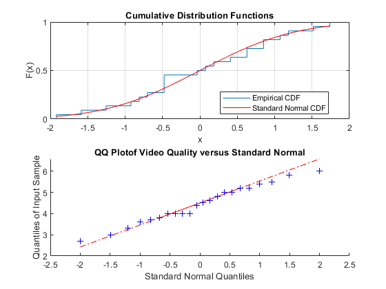

T = readtable("..\..\Gaming_Video_Quality_dataset.xlsx");
t_game4_condition26 = T(T.Condition == 26 & T.Game == "Game4" ,:);
ks_std = std(t_game4_condition26.VQ);
ks_mean = mean(t_game4_condition26.VQ);
z_values = (t_game4_condition26.VQ-ks_mean )/ks_std;
subplot(2,1,1);
cdfplot(z_values)
hold on
x_values = linspace(min(z_values),max(z_values));
plot(x_values,normcdf(x_values,0,1),'r-')
title('Cumulative Distribution Functions');
legend('Empirical CDF','Standard Normal CDF','Location','best');
[h_ks,p_ks_value] = kstest(z_values);
if(h_ks==1)
fprintf("Video Quality is not normal distributed(Kolmogrov-Smirnov-Test) with significant level:%d\n", p_ks_value)
else
fprintf("Video Quality is normal distributed(Kolmogrov-Smirnov-Test) with significant level:%d\n",p_ks_value)
end
[h_sw, p_sw_value, SWstatistic] = swtest(t_game4_condition26.VQ, 0.05);
if(h_sw==1)
fprintf("Video Quality is not normal distributed(Shapiro-Wilk) with significant level: %d\n", p_sw_value)
else
fprintf("Video Quality is normal distributed(Shapiro-Wilk) with significant level:%d\n",p_sw_value)
end
subplot(2,1,2);
qqplot(t_game4_condition26.VQ');
title('QQ Plotof Video Quality versus Standard Normal');
Video Quality is normal distributed(Kolmogrov-Smirnov-Test) with significant level:7.431306e-01
Video Quality is normal distributed(Shapiro-Wilk) with significant level:8.708964e-01
